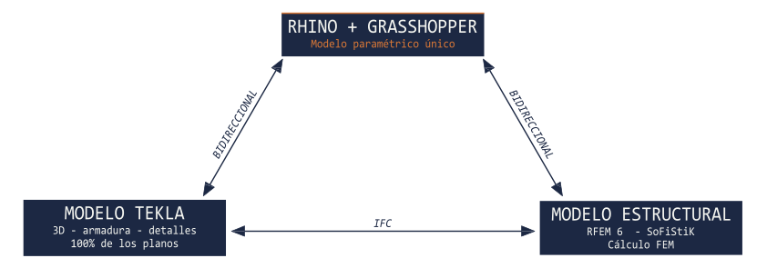

Nuestros Servicios
Ingeniería estructural y servicios asociados.
Ofrecemos un portafolio integral de servicios técnicos en torno a la ingeniería estructural, cubriendo desde la etapa de preinversión hasta el soporte durante la construcción.
Proyectos estructurales
Ingeniería conceptual, básica y de detalle de puentes, pasos a desnivel, pasarelas y obras civiles.
Peritajes y ensayos
Evaluación de estructuras existentes, análisis de patologías e informes técnicos.
Asesorías en obra
Soporte técnico durante la construcción, revisión de planos de taller y ajustes de diseño.
Estudios hidráulicos
Cauces, crecidas, socavación y modelación hidrodinámica para emplazamientos de puentes.
Mecánica de suelos
Caracterización geotécnica, fundaciones y parámetros para el diseño estructural.
Amenaza sísmica
Estudios de peligro sísmico específicos de sitio y definición de espectros de diseño.
Ingeniería conceptual y de alternativas
Diagnóstico preliminar, estudio de alternativas, estimación de cantidades y costos, asesoría en bases técnicas.
Análisis sísmico avanzado
Espectros NCh y AASHTO, análisis modal espectral, no linealidad en aisladores, verificación de desplazamientos.
Análisis de cargas especiales
Tsunami (AASHTO Guide Specs), socavación, viento, impacto vehicular y sobrecargas ferroviarias.
Revisión técnica independiente
Segundas opiniones, revisión de memorias de cálculo, auditoría de modelos FEM y verificación normativa.
BrIM.
Parametrización total.
Nuestro diferenciador técnico: un flujo de trabajo 100% paramétrico en que el modelo estructural, el modelo 3D y los planos se generan y actualizan desde una sola fuente.
Una metodología única en Chile, especialmente orientada a las tipologías estructurales del país.

Rhino + Grasshopper
Programación visual que define parámetros y reglas geométricas, con subrutinas Python y entrada de datos vía planilla Excel.
Tekla Structures
Modelo BIM con armadura y detallamiento completo del que se extrae el 100% de los planos estructurales.
RFEM 6 · SOFiSTiK
Programas de última generación para los análisis más complejos. Exportación directa a SAP2000 cuando se requiere.
Herramientas propias,
porque el detalle importa.
Mantenemos un área interna de I+D que evoluciona nuestro stack técnico con solvers y exportadores desarrollados in-house, orientados a dar control total sobre el cálculo y la generación de modelos BIM.
bridge-fem
Rust · PyO3 · Sparse linear algebra
Solver FEM desarrollado desde cero en Rust, con bindings PyO3 para integración con Python. Pensado específicamente para el tamaño y la topología de los modelos de puentes viales.
- Elementos frame Timoshenko + shell MITC4 / Batoz-Zienkiewicz
- Ensamblaje sparse CSR · solvers LDLT y PCG
- Modal espectral con Lanczos shift-invert + Cholesky sparse
- Espectros Manual de Carreteras Vol. 3, AASHTO y combinaciones CQC / SRSS
- Aceleración ~1500x vs. implementación dense en modal
bridge-ifc
Rust · PyO3 · IFC4x3 SPF direct
Crate independiente de Rust para generación IFC, sin dependencia de ningún CAD. Diseño en dos capas: API de dominio de alto nivel + API de esquema IFC de bajo nivel.
- Escritura directa SPF (STEP Physical File) de IFC4x3
- API de dominio para puentes (deck, pier, abutment, bearing)
- Bindings PyO3 consistentes con bridge-fem
- Validable contra buildingSMART
- Portable y embebible en distintos pipelines
SHIFT-INVERT
LANCZOS
INDEPENDIENTES
ACTUAL
VERIFICABLE